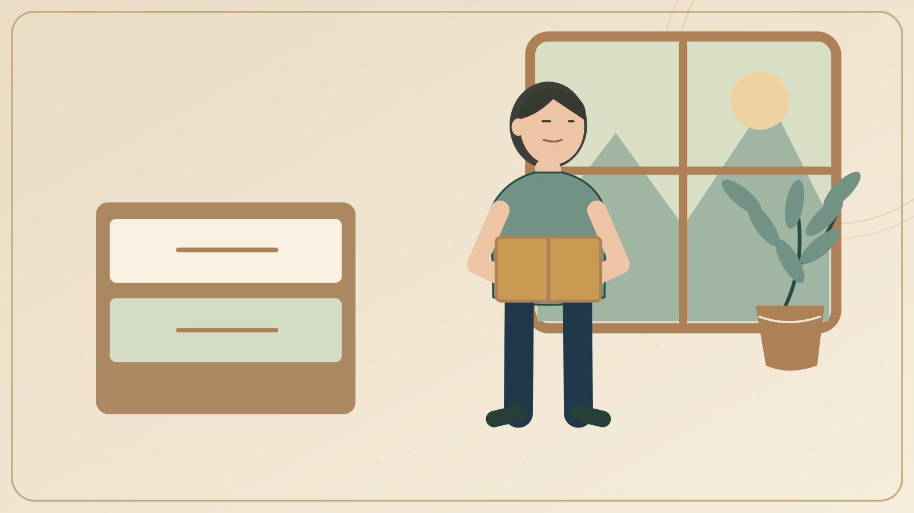

場所ごとに分け、道具を用意し、区切りごとに休むことで家事を続けやすくします。
家事は一度に終えなくてもよい
掃除、洗濯、収納、買い物が同じ日に重なることはよくあります。一つの時間帯に集中すると休息を確保しにくくなります。部屋、物の種類、工程で分け、時間のかかる作業を別日に分散しましょう。必要なことを先に行い、他は都合のよい時に残せます。
始める前に動線と道具を整える
清掃用品、ごみ袋、収納容器を取りやすく通行を妨げない場所に置きます。床に水や物があれば先に歩行の安全を確保しましょう。製品表示に従い、勝手に混ぜず換気を保ってください。家の整理の第一の目的は安全で使える空間であり、速さや完璧な写真ではありません。
作業の性質に応じ時間帯を分ける
机の整理、衣類をたたむ、小物を片付けることは日常に組み込めます。負担の大きい運搬や大量整理は助けと時間がある時に行いましょう。不安定な家具に立って物を取ったり、予定を急いで重すぎる物を運んだりしないでください。必要なら家族や適切な道具を利用できます。
休息は自然な作業の切り替えにできる
一区画が終わったら道具を置き、水を飲み、座るか安全な場所で短く歩けます。台湾国民健康署は日常活動と長時間同じ姿勢を避けることを勧めており、家事でも自分に合わせて調整できます。固定頻度の運動計画ではなく、中断が必要か気づくためです。
家事の予定を同居者と共有する
同居者がいれば担当と一緒に扱う物を相談しましょう。収納場所を共有すると何度も探す手間が減ります。幼児、高齢者、ペットがいる場合は道具や用品を適切に保管してください。能力は人それぞれで、同じ作業量を目標にする必要はありません。
一週間の清掃を小さな単位に分ける
例えば月曜に机、水曜に洗濯物、週末に状況に応じ収納を整理します。外出や家族の世話が必要な日は必須でない項目を延期しましょう。容易な作業をまとめ、負担の大きい項目は助けのある時間に分けられます。掃除後は道具を戻し、通路の障害にしないでください。唯一の家事工程ではなく家庭に応じ変えられる例です。家全体を終えてからしか座らないより、家事と休息を両立する方が続けやすくなります。
よくある質問：一日で終わらなかった家事は取り戻す必要がありますか？
必ずしも必要ではありません。家事は調整できる生活の予定で、競争ではありません。時間と体力が限られる日は必要なことから済ませましょう。異常や持続する不調があれば中止し、必要に応じ医療評価を受け、マッサージや我慢を続ける条件にしないでください。
参考資料
国民健康署｜長時間の座位を中断することと日常活動（閲覧：2026-11-27）
職業安全衛生署｜人間工学的危険予防計画ガイド（職場のリスク把握の背景）（閲覧：2026-11-27）
本文は一般的な生活・文化情報で、個別の医療助言ではありません。本人による確認待ちです。実際のサービス内容、料金、時間、場所はお問い合わせで確認してください。